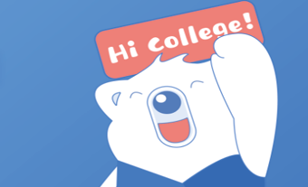
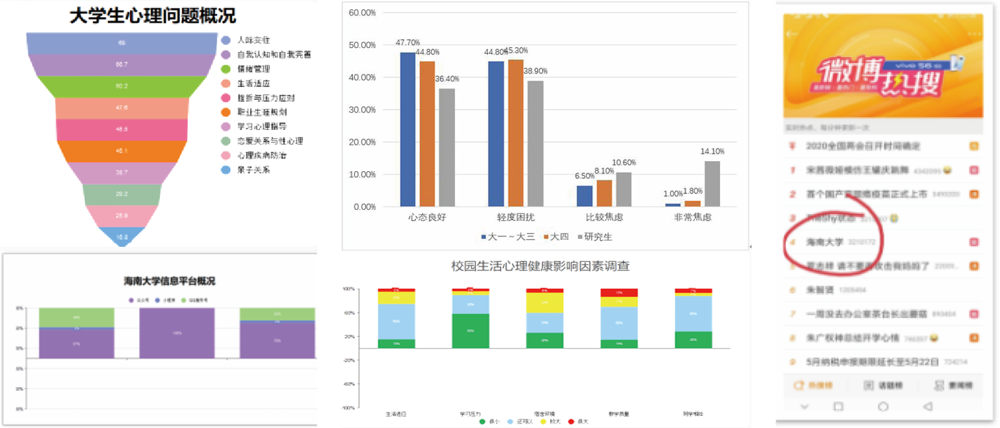
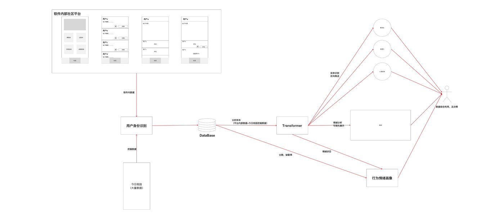
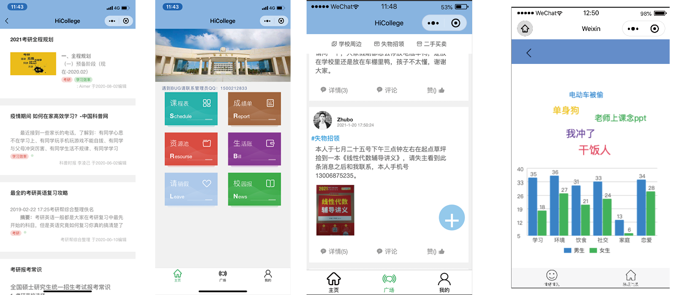

Toggle navigation
IslandLi
PORTFOLIO
HiCollege 校务管理系统
一款基于情绪分析模块的校园信息分享平台，即契合高校师生在校园生活中对于课程表，生活缴费，遗物挂失等基础功能的硬性需要，又基于情绪分析模块来满足现今高校对于心理健康监控的需求

项目引入
项目背景
高校低效的师生沟通无法及时响应学生诉求
近年频发因学生心理问题导致的舆论事件
学生会心理状态与其在校表现有强相关性
需求分析
学生需要有快捷高效的意见反馈通道
高校需明晰学生意见反馈并及时处理
高校需了解学生心理状况并提供帮助
功能射击
满足学生日常生活需求服务为前提
在应用内开发并完善校内社交平台
基于学生言论及在校表现构建画像

系统组成
基础校务功能
基于本校校务系统接口配置各数据源
迁移pc端各校务功能，移植于小程序
依据内学生社交结构，开发学生社区
心理画像构建
基于ID进行识别在其他平台挖掘补充样本
对样本分析总结学生情绪并关联在校表现
用决策树建立情绪模型产出学生情绪画像
教师端功能
对学生反馈进行关键词甄别，选择性显示
对学生整体情绪状况做可视化分析，展示
对高情绪风险学生标记，提醒教师关注

落地过程
平台选择
选择微信小程序快速部署，减少开发投入
采用教师端学生端分离解决用户功显差异
数据获取
获取本校校务系统接口保障基础数据来源
基于ID，在其他平台内采集言论，扩大样本
分析及可视化
基于Transformer完成对学生的情绪评估
基于W-CHART在小程序内展示分析结果

项目总结
团队分工
分工针对平台搭建和数据处理分离
个人承担 95% 的编码和设计工作
完成了针对原数据分析展示的任务
项目奖励
大学生国家级创新创业项目执行方案
中国大学生计算机设计大赛二等奖
一项直接相关的个人软件著作
个人收获
掌握从零搭建一个落地应用的完成过程
基于切身需求对NLP运用场景的深度探索
作为负责人进行组织分工，制定开发计划